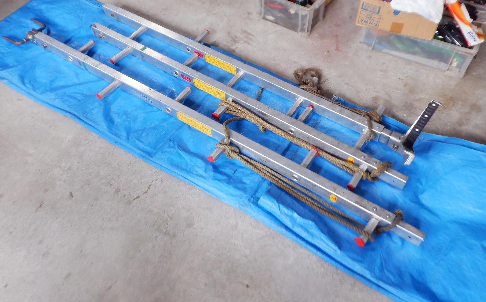

道具の名前と写真
「何を持ってきて」と言われたら、名前と写真を結び付ける。操作や組合せは現物の説明書と実演で確認する。
日常使う道具はボンゴAT・MTのどちらか。道具別の固定位置は未確認です。
写真の掲載状況
元の写真は01〜51の51枚です。掲載写真は39枚です。重複する道具は見やすい写真にまとめ、一覧は37件の代表表示にしています。写真31と34、32と33はそれぞれ同じ道具で、別角度の写真は詳細ページに残しています。写真07は、はしご教材で使っている切り抜き画像です。
未掲載：11・22・23・25・36・40・42・47・48・49・50・51。掲載用の写真をまだ確認できていません。番号は元のまま残しています。普通のナガノコの写真も未確認です。引張りの写真25は未掲載で、チルホールの写真17とは別です。
37件
 写真01 STIHL 044（ヨンヨン）社内呼称確認済み
写真01 STIHL 044（ヨンヨン）社内呼称確認済み 写真02 刈払機社内呼称確認済み
写真02 刈払機社内呼称確認済み 写真03 車輪止め（歯止め）社内呼称確認済み
写真03 車輪止め（歯止め）社内呼称確認済み 写真04 伸びるチェーンソー社内呼称確認済み
写真04 伸びるチェーンソー社内呼称確認済み 写真05 ロープ社内呼称確認済み
写真05 ロープ社内呼称確認済み 写真06 胴綱（ワークポジショニングロープ）社内呼称確認済み
写真06 胴綱（ワークポジショニングロープ）社内呼称確認済み
写真07 はしご社内呼称確認済み 写真08 継ぎ梯子社内呼称確認済み
写真08 継ぎ梯子社内呼称確認済み 写真09 帯社内呼称確認済み
写真09 帯社内呼称確認済み 写真10 オーリング社内呼称確認済み
写真10 オーリング社内呼称確認済み 写真12 ロリップ社内呼称確認済み
写真12 ロリップ社内呼称確認済み 写真13 ワイヤー社内呼称確認済み
写真13 ワイヤー社内呼称確認済み 写真14 滑車（金車）社内呼称確認済み
写真14 滑車（金車）社内呼称確認済み 写真15 シャックル社内呼称確認済み
写真15 シャックル社内呼称確認済み 写真16 マキタ／ハスクのバッテリー社内呼称確認済み
写真16 マキタ／ハスクのバッテリー社内呼称確認済み 写真17 チルホール社内呼称確認済み
写真17 チルホール社内呼称確認済み 写真18 輪尺（サシ）社内呼称確認済み
写真18 輪尺（サシ）社内呼称確認済み 写真19 トレッキングポール（杖）社内呼称確認済み
写真19 トレッキングポール（杖）社内呼称確認済み 写真20 Makita MUC254D（電気のチェーンソー）社内呼称確認済み
写真20 Makita MUC254D（電気のチェーンソー）社内呼称確認済み 写真21 ちっさいチェーンソー社内呼称確認済み
写真21 ちっさいチェーンソー社内呼称確認済み 写真24 トビ（鳶口の候補）社内呼称確認済み
写真24 トビ（鳶口の候補）社内呼称確認済み 写真26 間竿（けんざお）社内呼称確認済み
写真26 間竿（けんざお）社内呼称確認済み 写真27 指し棒社内呼称確認済み
写真27 指し棒社内呼称確認済み 写真28 耐電ノコ社内呼称確認済み
写真28 耐電ノコ社内呼称確認済み 写真29 両口ハンマー（セットハンマー）社内呼称確認済み
写真29 両口ハンマー（セットハンマー）社内呼称確認済み 写真30 伐倒用くさび（矢）社内呼称確認済み
写真30 伐倒用くさび（矢）社内呼称確認済み 写真31 STIHL MS 200（ニーマル）社内呼称確認済み・別角度の写真34は詳細へ
写真31 STIHL MS 200（ニーマル）社内呼称確認済み・別角度の写真34は詳細へ 写真33 STIHL チェーンソー（ニーロク・型式未確認）社内呼称確認済み・別角度の写真32は詳細へ
写真33 STIHL チェーンソー（ニーロク・型式未確認）社内呼称確認済み・別角度の写真32は詳細へ 写真35 溝さらうヤツ社内呼称確認済み
写真35 溝さらうヤツ社内呼称確認済み 写真37 やすり社内呼称確認済み
写真37 やすり社内呼称確認済み 写真38 コンビレンチ（社内呼称未確認）社内呼称は未確認
写真38 コンビレンチ（社内呼称未確認）社内呼称は未確認 写真39 手箕（てみ）社内呼称確認済み
写真39 手箕（てみ）社内呼称確認済み 写真41 チャプス社内呼称確認済み
写真41 チャプス社内呼称確認済み 写真43 STIHL BG 86 C（ブロワー）社内呼称確認済み
写真43 STIHL BG 86 C（ブロワー）社内呼称確認済み 写真44 コーン、コーンバー社内呼称確認済み
写真44 コーン、コーンバー社内呼称確認済み 写真45 メーター看板社内呼称確認済み
写真45 メーター看板社内呼称確認済み 写真46 矢印板（矢板）社内呼称確認済み
写真46 矢印板（矢板）社内呼称確認済み写真34の「20（ニーマル）」と写真20の「電気のチェーンソー」は別。写真25「引っ張り」は未受領です。未掲載の12枚を別の写真で代用していません。
まず覚える5種類
呼び名と見た目を合わせる
チェーンソーの聞取りで挙がった大きい順は、44（写真01）→26（写真33）→20（写真34）→ちっさいチェーンソー（写真21）。数字から型式や排気量を推測しません。
ナガノコは伸びるチェーンソーより高い所に届く、伸びるチェーンソーはやや重いが多くの枝を容易に払える、という会社での使い分けの説明があります。機種別の性能や操作を保証する説明ではありません。